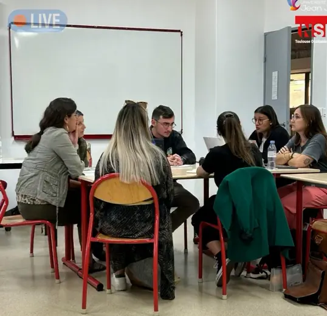
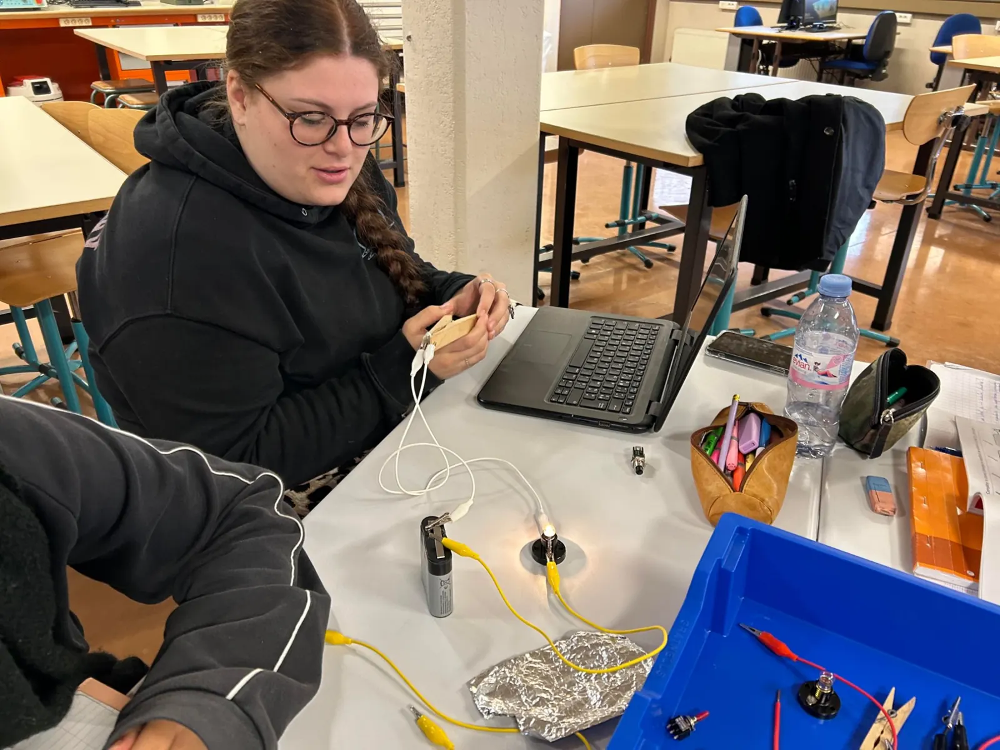
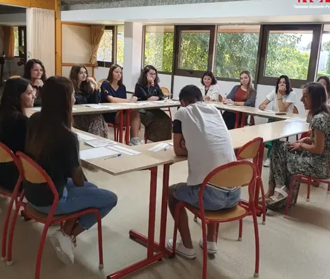
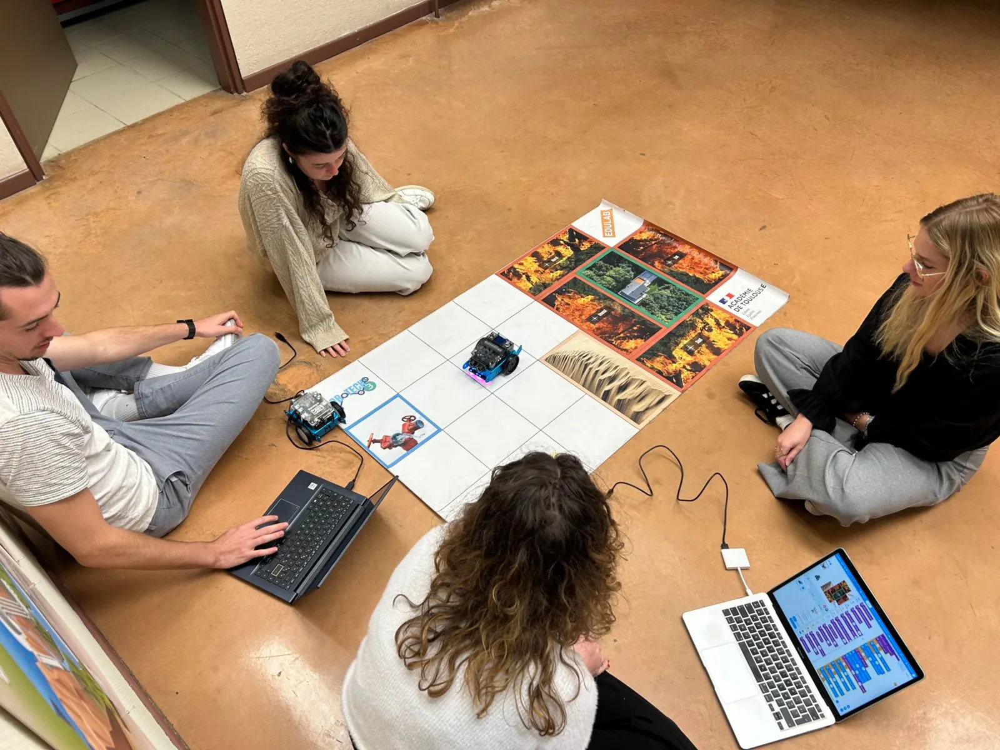
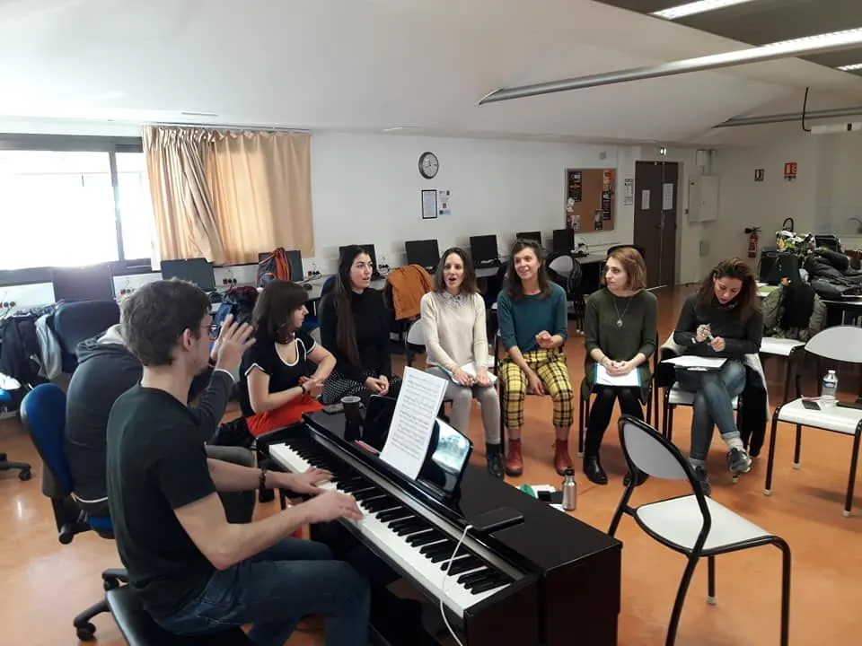
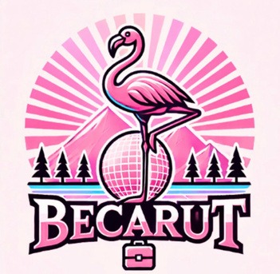

Devenir professeur des écoles au pied des Pyrénées
Au cœur d'un campus universitaire dynamique, le site de Tarbes de l'INSPE Toulouse Occitanie-Pyrénées forme les futurs enseignants du premier degré, de la licence au master.
Être professeur des écoles
Enseignant du 1er degré, le professeur des écoles exerce de la toute petite section de maternelle (TPS) jusqu'au CM2.
Il permet aux élèves de s'approprier les savoirs fondamentaux et éveille chez eux l'intérêt pour le monde qui les entoure. Un métier polyvalent : français, mathématiques, sciences, arts, EPS, langues, numérique…
- Enseigner toutes les disciplines de l'école primaire
- Accompagner chaque élève dans sa diversité
- Travailler en équipe et avec les familles
- Faire vivre les valeurs de la République
Témoignage d'étudiantes du site de Tarbes.
Comment devenir professeur des écoles ?
Depuis la réforme de la formation des enseignants, le concours (CRPE) se passe en fin de licence. Les lauréats entrent ensuite dans un master de 2 ans rémunéré.
Regardez la vidéo en 35 secondes, puis cliquez sur chaque étape de la frise.
Se former à Tarbes
Cours en présentiel, stages en écoles et accompagnement de proximité dans un site à taille humaine.
Licence Professorat des écoles (LPE) · depuis la rentrée 2026
Cursus pluridisciplinaire co-accrédité par l'Université Toulouse Jean Jaurès, l'Université de Toulouse et l'INU Champollion. Il prépare au métier de professeur des écoles et au CRPE, désormais passé en fin de L3.
Toutes les matières de l'école primaire sont travaillées : français, mathématiques, sciences, histoire-géographie et EMC, langues, EPS et arts. La formation combine :
- Des savoirs disciplinaires au niveau attendu pour enseigner
- Des savoirs didactiques et pédagogiques : psychologie de l'enfant, didactique, gestion de classe
- Des compétences professionnelles : inclusion, différenciation, numérique éducatif, évaluation, travail en équipe, valeurs de la République
- Une immersion progressive sur le terrain : au moins 10 semaines de stage en école primaire


4 blocs de compétences
S'approprier les savoirs
Savoirs pour enseigner à l'école primaire, préparation aux épreuves disciplinaires du CRPE.
Analyser les situations
Caractéristiques des situations et des contextes d'enseignement-apprentissage, diversité des élèves.
Le contexte institutionnel
Système éducatif, valeurs de la République, droits et devoirs du fonctionnaire.
Construire son projet
Projet professionnel construit au fil des stages et de l'accompagnement.
Candidature sur Parcoursup
Ouverte aux titulaires du baccalauréat (général, technologique ou professionnel), du DAEU ou d'un diplôme équivalent. Formulez votre vœu sur Parcoursup en choisissant le site de Tarbes. Étudiants hors Union européenne : procédure « Études en France ».
Aller sur Parcoursup- Ouverture de la carte des formations
- Inscription et formulation des vœux
- Date limite pour formuler ses vœux
- Dossier complété, vœux confirmés
- Phase principale d'admission : réponses des formations
Calendrier indicatif établi d'après la campagne 2026. Une entrée en cours de cursus est possible par validation des acquis (VES, VA85, VAE).
Des équipes mixtes
Enseignants-chercheurs, enseignants du 1er et du 2nd degré, enseignants en temps partagé entre leur école et l'université, et professeurs des écoles maîtres formateurs.
Option occitan
Pour préparer le CRPE bilingue français-occitan : langue et culture occitanes et initiation à la didactique du bilinguisme.
8 sites dans l'académie
Albi, Auch, Cahors, Foix, Montauban, Rodez, Tarbes, Toulouse. 312 places en L1 dans l'académie, dont 30 à Tarbes.
Répartition des enseignements
Et après la licence ?
Diplôme : bac+3 (niveau 6, fiche RNCP 42922). Il donne accès aux concours de la fonction publique, dont le CRPE et le CRPE bilingue français-occitan.
- Lauréat du CRPE : master M2E Professorat des écoles, rémunéré (élève fonctionnaire en M1, fonctionnaire stagiaire en M2)
- Non lauréat : master M2E parcours non-lauréats, sur Mon Master, pour repasser le concours
- Autres masters : M2E 2nd degré (non-lauréats), MEEF Pratiques et ingénierie de la formation, Sciences de l'éducation
Contacts de la formation
Responsables : inspe.mention1@univ-tlse2.fr · à Tarbes : Laurent Falcette, responsable de site.
Secrétariat : Sandrine Domenech.
Syllabus et vidéo de présentation sur le site de l'INSPE TOP.
Master Enseignement et Éducation (M2E) · mention Professorat des écoles
Dans la continuité de la Licence PE, ce master prépare de façon progressive au métier en articulant théorie, pratique et recherche. Il s'appuie sur le référentiel national des compétences des métiers du professorat et de l'éducation (arrêté du 12 janvier 2026).
Il est accessible :
- Aux lauréats du CRPE titulaires d'une licence : affectés pour 2 ans en master, avec un statut rémunéré
- Aux non-lauréats titulaires d'un bac+3 : candidature sur Mon Master, pour poursuivre sa formation et préparer le concours


4 blocs de compétences
Maîtriser les disciplines
Enseigner dans le cadre de la polyvalence : savoirs académiques et didactiques.
S'adapter à la diversité
Adapter sa pratique à la diversité des élèves et au contexte d'exercice, y compris multilingue.
Agir dans l'institution
Agir au sein de la communauté éducative et du service public d'éducation.
Se développer professionnellement
S'engager dans une démarche de développement professionnel : recherche, mémoire, collectif.
Élève fonctionnaire
- Nets par mois
- Stage d'observation et de pratique accompagnée (SOPA)
- 12 semaines, à tiers-temps
Fonctionnaire stagiaire
- Nets par mois
- Stage en responsabilité (SER)
- 18 semaines, à mi-temps, avec tutorat mixte
Professeur titulaire
- Nets par mois
- Engagement de servir de 4 ans
Montants indicatifs. Le statut d'élève fonctionnaire est compatible avec les bourses sur critères sociaux. Pour les non-lauréats, les stages sont plus courts.
Le mémoire
Articulé avec la pratique professionnelle, il se construit sur les 4 semestres : cours de méthodologie, séminaires de suivi et tutorat personnalisé, jusqu'à la soutenance.
Langues & numérique
Des UE dédiées aux langues vivantes et au numérique pour atteindre et certifier le niveau attendu à l'issue des deux ans.
Parcours bilingue occitan
Langue et culture occitanes, didactique et professionnalisation en contexte bilingue, avec un volet spécifique dans le bloc 1.
Organisation des enseignements (UE)
Les unités d'enseignement (UE) reviennent chaque semestre selon 5 « rangs » :
- Rangs 1 et 2 · savoirs académiques et didactiques, polyvalence, classes multilingues et multiculturelles (blocs 1 et 2)
- Rang 3 · analyse des contextes d'apprentissage pour enseigner (blocs 2 et 3)
- Rang 4 · initiation à la recherche, production et soutenance du mémoire (bloc 4)
- Rang 5 · professionnalisation et pratiques de terrain, adossées au stage SOPA ou SER, dont 2 h d'engagement dans le collectif apprenant
Non-lauréats : préparer le concours pendant le master
Chaque semestre comprend une UE hors-cursus de préparation au concours : 2 UE de 36 h en M1 et 2 UE de 12 h en M2. Les stages, plus courts, sont validés par une UE non compensable au dernier semestre.
Contacts de la formation
Responsables : Agnès Morcillo, Georges Madar, Laurent Falcette (responsable du site de Tarbes).
Secrétariat : Sandrine Domenech.
Programme détaillé et syllabus sur le site de l'INSPE TOP.
Épreuves notionnelles
- Français et mathématiques
- Autres domaines d'enseignement
Épreuves orales
- Exposé disciplinaire en français ou en mathématiques
- Épreuve d'entretien et de motivation
Calendrier
- Concours accessible dès l'inscription en L3
- Il faut valider la licence pour bénéficier du concours
- Bénéfice du concours conservé 1 an
Consultez le détail officiel des épreuves et les dates d'inscription sur devenirenseignant.gouv.fr.
Des perspectives variées
J'ai le concoursÉvoluer dans sa carrière
- Changer de niveau d'enseignement, d'école
- Enseigner à l'étranger
- Devenir directeur, maître formateur, ERUN ou conseiller pédagogique
- Se spécialiser (SEGPA, ULIS…)
- Passer le concours d'inspecteur de l'Éducation nationale (IEN)
Je n'ai pas le concoursD'autres voies possibles
- Poursuivre en master et repasser le concours
- Enseigner à l'étranger ou en filière professionnelle
- Passer le concours de CPE
- Devenir éducateur spécialisé
- Devenir AED, AESH, ATSEM…
DU Pédagogie du chant
Métiers de la scène · Coaching vocal. Une formation pour développer sa pratique vocale et apprendre à la transmettre.
Elle favorise l'insertion dans le spectacle vivant, la radio, les chœurs, les associations culturelles, les salles de spectacles, les SMAC, les écoles de musique et conservatoires…
Candidater sur le site de l'INSPE
Compétences visées
- Techniques vocales : lyrique, chanson, gospel, traditionnel, jazz
- Interprétation et présence scénique
- Appareil phonatoire, préservation de la voix
- Accompagnement au clavier, direction de chœur
- Prise de son, enregistrement, son amplifié
- Art dramatique et expression corporelle
Pour qui ?
- Tous publics, niveau Bac
- De préférence avec une expérience de chanteur
- Intermittents du spectacle
- Enseignants en école de musique (avec ou sans DEM), dumistes
- Personnels des scènes de musiques actuelles
Évaluation : contrôle continu.
Débouchés
- Coach vocal
- Animateur musical ou scénique (groupes vocaux amateurs, enfants, adultes)
- Professeur en structures musicales
- Chanteur·se soliste, choriste
Semestre 1 143 h · 30 ECTS
| UE | Intitulé | Heures | ECTS |
|---|---|---|---|
| 01 | Pratique musicale (accompagnement piano, direction chorale) | 25 | 2 |
| 02 | Techniques vocales 1 | 25 | 8 |
| 03 | Musique & TICE : utilisation de l'informatique | 25 | 2 |
| 04 | Chanson française | 25 | 8 |
| 05 | Chanson anglo-saxonne | 25 | 8 |
| 06 | Prise de son, diffusion du son (SMAC La Gespe, Tarbes) · Technique chantée amplifiée | 18 | 2 |
Semestre 2 122 h · 30 ECTS
| UE | Intitulé | Heures | ECTS |
|---|---|---|---|
| 07 | Coaching vocal : l'écoute de l'enseignant · Art dramatique et lyrique | 25 | 2 |
| 08 | Techniques vocales 2 | 25 | 5 |
| 09 | Préparation du spectacle final (création de chansons, polyphonie, transmission…) | 12 | 8 |
| 10 | Préparation du spectacle final (suite) | 25 | 5 |
| 11 | Musique improvisée (traditionnelle, gospel, jazz…) · Expression corporelle et scénique | 25 | 2 |
| 12 | Stage (mise en œuvre et suivi) | 10 | 8 |
Bienvenue sur le site de Tarbes
Entrez ! Entratz ! Déplacez-vous à 360° dans les locaux comme si vous y étiez, puis découvrez chaque lieu en détail.
Les lieux en détail
Un lieu de formation familial
Un site à taille humaine où l'on se connaît, s'entraide et construit des projets ensemble.
- Un BDE actif : le Becarut anime la vie de promo
- Des projets citoyens et culturels autour d'un thème de promo annuel
- Du sport avec l'association sportive universitaire
- Un campus partagé avec l'IUT et l'ENI de Tarbes

Suivre @inspetop_tarbesUne situation géographique idéale
Entre ville et montagne, le site est facile d'accès, quel que soit votre moyen de transport.
Une administration à votre écoute
N'hésitez pas à nous contacter si vous avez des questions ! Adishatz !